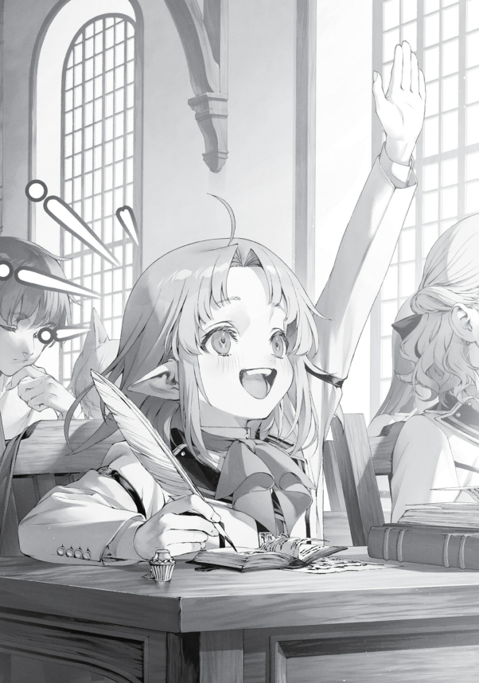

Mümkün olduğunca yan yolları kullanmaya çalışıyordum. Ama buna rağmen, üzerimdeki kılık dikkat çekiyor gibi hissediyordum.
Tabii bu sadece benim kafamda kurduğum bir şeydi. Genel olarak insanlar başka insanlara çok dikkat etmezdi—tabii eğer Orsted gibi görünmüyorsanız.
Çünkü ciddi anlamda birkaç bakış üstüme çekiyordum. Bu da normaldi aslında.
Orsted, bu kasabanın kenarına ofislerini açalı biraz zaman geçmişti. Onu pek fazla kişi görmese de, neye benzediği hakkında genel bir fikirleri vardı.
Onlara göre bu siyah miğferi ve beyaz pelerini giyen biri ancak Orsted olabilirdi. Gerçi lanet üzerimde olmadığı için belki de “onun” hakkında iyi bir izlenim bırakıyordum.
*Eğer durum böyleyse, ana caddeyi denesem mi acaba? Orsted’in imajını iyileştirmek için iyi işler yapabilirdim, tıpkı Son Ölüm zamanında yaptığım gibi.
Üstelik ana cadde okula da daha yakındı.*
“Tamam, yapalım şunu,” dedim kendi kendime. Bu tam anlamıyla bir taşla iki kuş olurdu.
Orsted’in itibarı yükselirse bu bana da yarardı. Hatta aklıma bir fikir bile geldi: “Ejderha Tanrısı Festivali” düzenlemeyi önersem mi?
Herkes beyaz pelerinler ve miğferlerle giyinir, sabaha kadar eğlenirdi. Bu fikirle kafam doluyken ana caddeye doğru ilerledim.
“Ne?!” Ani bir hareketle gölgeye çekildim.
Ana caddede çok iyi tanıdığım bir kızıl kafa belirmişti. Yanında büyük, beyaz bir köpek vardı ve sırtında iki çocuk taşıyordu.
Eris ve Leo. Leo’nun sırtında oturanlar Lara ve Arus’tu.
*Leo, seni hain köpek. Benimle yürüyüşe çıkmaya mızmızlanıp şimdi Eris’le dışarıdasın, ha?* Neyse, tamam.
Benimki farklı bir durumdu. Ben tamamen kendi çıkarlarım için sahte bir yürüyüş numarası yapıyordum ama Eris ve Leo devriye atıyorlardı, gerçekten yürüyüş yapıyorlardı.
Ama işte ben köşeye sıkışmıştım. Eris’e burada rastlamayı hiç beklememiştim.
Belki de bu işte onunla iş birliği yapabilirdim? Hmm.
Ama bu kıyafeti nasıl açıklayacaktım ki? Aniden kılıcını çekmezdi herhalde, değil mi?
Üstelik çocukları da düşünmem gerekiyordu. Sonuçta açıkça yanlış bir şey yapıyordum—Sylphie’ye verdiğim sözü çiğniyordum.
Beni bu hâlde görmelerine izin mi vermeliydim? Kesinlikle hayır.
*Bu hiç iyi değildi. Sonuçta kılık değiştirmiştim.
Belki en iyisi eve geri dönmekti… Bu kadar gelmişken böyle düşünmek biraz saçma ama ya eve dönüp Lucie’yi beklesem?*
Hmmmm. Ama Lucie’yi büyük gününde görmek istiyordum.
Bu bencillikti, biliyordum. Sylphie’nin dediği gibi değildi aslında.
Lucie’ye güvenmediğim için burada değildim. Gölgelerden yardım etmek için de gelmemiştim.
*Yemin ederim ki hiçbir şekilde müdahale etmeyeceğim. Hatta Lucie ağlayacak gibi görünse bile.* O evine döndüğünde, olanları ondan dinleyecektim.
İşte o zaman ona yardım eder, tavsiye verirdim. *Anladın mı, Rudeus?
İşte sınır bu. Bu çizgiyi aşarsan, Sylphie’ye verdiğin sözü bozmuş olursun.* Bu kuralı Sylphie’ye danışmadan kafamdan uydurmuştum ama ona sadık kaldığım sürece yanlış bir şey yapmış sayılmazdım.
Tabii, bu iş bittiğinde Sylphie ile konuşup ondan özür dileyecektim. “Lucie’yi sınıfta görme isteğim o kadar ağır bastı ki dayanamadım,” diyecektim.
“Kendimi tutamadım,” diyecektim. *Anladın mı?
Buna katlanabilirsin, değil mi? Azarı kabullenirsin, değil mi?* *Elbette kabullenirim!* *Tamam o zaman!
Aferin sana, Rudeus!* “Hav! Hav!”
Tüh. Görünüşe bakılırsa Leo beni fark etmişti.
Burnu seğiriyordu ve olduğu yerden benim tarafa doğru bakıyordu. “Ne oldu oğlum?
Neyin var?” Eris de fark edecekti birazdan.
Beni bulmaları çok da büyük bir mesele değildi aslında, ama bu hâlde neden böyle giyindiğimi açıklamak uzun sürebilirdi. Zaman kaybetmek istemiyordum, o yüzden kestirmeden gitmeliydim.
“Hey, oradaki! Çık ortaya!”
Ama iş işten geçmişti. Eris beni fark etmişti bile.
İşte dikkat çekince böyle oluyordu… Şimdi ne yapacaktım?
Ortaya çıkmalı mıydım, yoksa saklanmaya devam mı etmeliydim? Peki ya ortaya çıkarsam, ne söyleyecektim?
Ama bir dakika. Hm.
Hâlâ uzaktalardı. Bu mesafeden gizliliğimi koruyabilirdim belki.
Gölgelerden yarı yarıya çıktım. Eris, elini belindeki kılıca götürmüş, Leo ise kuyruğunu sallıyordu.
O sırada, Leo’nun sırtında oturan iki kişiyle—Lara ve Lara’nın kollarıyla sarılmış şekilde oturan Arus’la—göz göze geldim. İkisi de şaşkın bakışlarla bana bakıyordu.
“Orsted…?” Eris şüpheli bir ifadeyle kılıcını bıraktı.
Ben de arkamı dönüp yürümeye başladım, gayet rahat bir tavırla. Sanki tesadüfen birbirimize rastlamışız gibi davrandım.
“Bir dakika!” diye seslendi Eris bir an sonra.
“Tch…!” Oyun bitti mi yoksa?
Eris bir Kılıç Kralı’ydı; Orsted olmadığımı tek bakışta anlayabilirdi, değil mi? Daha durmadan Eris, “Yok ya, hayal gördüm herhâlde.
Hadi, Leo,” dedi. Geri döndü ve yürümeye başladı.
Leo bir an benim tarafa baktı ama peşimden gelmedi. Her şey plana uygundu.
Lara ve Arus’la tekrar göz göze geldim. Lara hayallere dalmış gibi bakıyordu, Arus ise ağzı açık şekilde bana bakıyordu.
Beni uğurluyor gibiydiler. Okula vardım.
Ana kapıyı kullanmaktan kaçındım, bunun yerine bir duvarı tırmanarak içeri sızdım ve sınıflara doğru yöneldim. Birkaç yıl boyunca burada derslere katılmıştım, bu yüzden birinci sınıfların sınıfının nerede olduğunu gayet iyi biliyordum.
Derste olmayan ya da güneşli havada dışarıda ders işleyen öğrencilerin gözünden uzak durarak oraya doğru ilerledim. *Bu yer hiç değişmemiş.*
Birkaç yıl geçmişti sadece, ama zamanın akışı üzerime ağırlığını hissettirmişti. Çoğu öğrenciyi tanımıyordum.
Eskisine göre daha fazla elf, canavar insanı, cüce ve benzeri türlerden öğrenciler vardı. Epeyce iblis ırkından öğrenci de gözüme çarptı.
Bir akşam yemeğinde Roxy bana, elf ve cüce liderleriyle bağlantıları olan öğrencilerin öğrenci konseyi içinde yer aldığını söylemişti. İnsan dışı ırkların seslerinin ve konumlarının güçlenmesiyle, dünyanın dört bir yanından gelen diğer ırklardan öğrencilerin sayısı artmıştı.
Ariel öğrenci konseyi başkanıyken okul hiç böyle bir yer değildi. Sayıları artsa da diğer ırklar gayet iyi anlaşıyordu.
Bu büyük ihtimalle Norn’un öğrenci konseyi başkanı olarak bıraktığı bir mirastı—ırklar arası ayrımcılığa asla göz yummazdı. Okulun kültürüne damgasını vurmuştu.
Büyü Ulusları’ndan bazı soylular buna burun kıvırıyormuş, ama şahsen ben gururluydum. Düşüncelere dalmış bir hâlde koridor boyunca yürüdüm.
Derken tam köşeyi dönecekken… “Hm?”
“Aah.” Köşeyi dönen biriyle çarpıştım.
Yanında beş öğrenci vardı ya da daha doğrusu, bu beş öğrenci ona yapışmış gibiydi. “Yapışmış” demek biraz kaba olur, ama asıl mesele şu: Bu kişi popülerdi.
Ellerinde not defterleri olduğuna göre, belli ki derste anlamadıkları bir şeyleri tartışıyorlardı. Çok takdire şayan bir durum.
Ne öğrenmek istiyorlarsa, bu kişi cevaplara sahipti. Onun dudaklarından dökülen her kelime gerçeği yansıtıyordu.
Yani, tamam, bazen hata yapabiliyordu, ama o hatalar bile gerçeğin bir parçasıydı. *Hepiniz kutsal bir vahiy alıyorsunuz.
Onun sözleri bu tür bir güç barındırıyor. Dinleyin, ey öğrenciler.
Sadakatle kulak verin, anlamlarını dikkatle düşünün ve hayatınıza uygulayın. Ey öğrenciler, şu anda gerçekten kutsanıyorsunuz.* “Orsted…?”
Nihayet konuştu. Uykulu gözleri şüpheyle daraldı, ardından bana doğru kaldırıldı.
Birkaç saniye geçti ve sonra gözleri birden açıldı. “Hayır, Rudy?
Rudy, sensin, değil mi? Sen!”
Roxy’den bir şey saklamak imkânsızdı. Keskin bakışları her zaman gerçeği bulurdu.
“Nasıl… anladın?”
diye sordum. Aptaldım ve bunu bilmem gerekiyordu.
Anladım, tamam mı? Roxy inanılmazdı.
Bazen, gerçeğe ulaşmak için bir yolculuk yapmasına gerek kalmadan, doğrudan varıyordu. “Orsted taklidi yapmaya cesaret edecek tek kişi sensin, Rudy.”
Eh, haksız da sayılmazdı. “Peki, Bay Orsted bundan haberdar mı?”
“Şey, evet. Aslında, Bay Orsted’in önerisiydi,” dedim.
“Gerçekten mi…? O zaman iyi bir sebebi olmalı, değil mi?”
Roxy gözlerini kısarak bana baktı. Görünüşe göre, beni tam da istediğim şekilde yanlış anlamıştı.
Hmm. Şimdi Roxy’yi mi kandıracaktım?
Anlık bir bencillik için ona yalan mı söyleyecektim? Bununla yaşayabilir miydim?
Rudeus, nasıl yapabilirsin ki bunu? “Hayır, pek de iyi bir sebep değil.”
Roxy’ye asla yalan söyleyemezdim. Yani, hayat kurtarmak için yapardım belki, ama bu farklıydı.
Burada yalan söylersem, gelecekteki yirmi yıl sonraki ben geçmişe gelir, bana bir Taş Mermisi atardı. Ya da sıvıya dönüşüp benliğimi kaybederdim.
“O zaman neden böyle giyindin?” diye sordu Roxy.
“Şey… şey…
Lucie’yi görmek istedim…” dedim kekeleyerek.
“Lucie mi?” Roxy, kısa bir duraksamadan sonra tekrarladı.
“Ama Sylphie’ye söz vermiştin, değil mi?” “Lucie’ye arkadan yardım etmeye ya da aşırı korumacı bir ebeveyn olmaya çalışmıyorum.
Sadece… şey, işte, Lucie’nin derslerde nasıl olduğunu görmek istedim…”
diye mırıldandım. Roxy yukarı baktı ve yüzü biraz azarlayıcı bir ifade aldı.
Çevremizdeki öğrenciler, bu iki yetişkin arasındaki durumu anlamaya çalışır gibi bakıyordu. *Affet beni, affet beni.* Nihayet, Roxy’nin bakışı yumuşadı ve şöyle dedi: “Pekâlâ.
Sadece izleyeceğine ve hiçbir şekilde yardım etmeyeceğine eminsen, seni görmemiş gibi davranacağım. Orsted’in üniversiteyi denetlemeye geldiğini söyleriz.”
“Hocam…!” dedim nefesimi tutarak.
“Sadece bu seferlik, tamam mı?” “Elbette.
Eve gider gitmez Sylphie’den de özür dileyeceğim.” “Çok iyi.”
*Tanrı beni affetmişti.* Roxy’ye borçlanmıştım. Bu günden itibaren her gün beş vakit yüzümü Roxy’ye dönüp derin bir saygıyla eğilecektim.
“Şimdi, bir sonraki ders başlamadan önce bu öğrencilerin sorularını yanıtlamam gerekiyor, o yüzden… Bu arada Rudy, Lucie’nin sınıfının nerede olduğunu biliyor musun?”
“Elbette biliyorum.” “Tamam o zaman.”
Roxy, elimi hızlıca sıktı ve ardından koridorda yürüyerek uzaklaştı. Öğrenciler peşinden koşarken, “Bu kimdi?!”
diye soruyorlardı. Ona bayılmışlardı.
Tabii ki bayılmışlardı. O benim hocamdı.
“Tamam,” dedim kendi kendime, tekrar motivasyonumu toparlayarak. Ve koridor boyunca ilerlemeye koyuldum.
**\*\*\*** Sınıfa geldim. Koridordan içeri bakmaya çalıştım, ama bu kötü bir fikir gibi geldi.
Bunun yerine dışarıdan dolanmayı seçtim. Sonuçta Orsted’in sınıfları gözetlediği dedikodusu yayılırsa, şirketin itibarı zarar görebilirdi.
Hızlıca düşündüm ve sınıf penceresinin yanına, çevredeki kimsenin beni görmemesi için bir paravan yaptım. Sonra, pencerenin ardından…
“Dur bir dakika. Ya sınıfı gözlemlemek için gidip buna bir teftiş desem?”
Roxy bu konuda bana yeşil ışık yakmıştı. Sadece gidip açıklama yapsam, mesela Jenius gibi birine, bunu resmi bir şeymiş gibi gösterebilirdi.
Yanlış bir hesap yapmışım. Neyse, şimdilik Lucie’yi görmek bile yeterdi.
Uzak Görüş Gözü’mü açtım ve pencerenin ardından baktım. Sınıf sıraları düzenli bir şekilde dizilmişti ve sıralarda birinci sınıf öğrencileri oturuyordu.
Çoğu on beş yaşından büyük yetişkinlerdi. Aralarında on yaş civarında görünen birkaç çocuk da vardı.
Yedi yaşında olan neredeyse yoktu. Küçük görünenler muhtemelen cüceydi.
İnsanlar dışında, iblisler, elfler, cüceler ve hayvan insanlar vardı. Bazıları nazik, bazıları huzurlu, bazıları ise ukala görünüyordu.
Çeşit boldu. Sınıfın arka tarafında oturanların yüzleri sertti; muhtemelen eski maceracılardı.
Lucie onlarla bir sorun yaşarsa ona bulaşmazlar, değil mi? Hayır, yedi yaşındaki bir çocuğa bulaşacak kadar alçalmazlardı.
Lucie nerede…? Aha, işte orada, en önde oturuyordu.
İşte benim kızım. Masası o kadar büyüktü ki önünü görmekte zorlanıyor gibiydi.
Bu bir sorundu. Belki yarın ona bir minder getirmek iyi bir fikir olabilirdi.
Yanında on yaşlarında görünen bir kız oturuyordu. Cüce mi?
Yok, insan gibi görünüyordu. Saçının şekline bakılırsa, muhtemelen bir soylu.
Ara sıra Lucie’ye bir şeyler söylüyor, sonra büyü kitabına dönüyordu. Not alma alışkanlığı olmadığı belliydi.
Ciddi bir ifadeyle Lucie, büyü kitabını işaret ederek bir şeyler söylüyordu. Fısıldadığı için ne dediğini duyamadım.
Belki ona bir şeyler öğretiyordu. Kendi yaşında bir arkadaş mı edinmişti?
Yoksa ortama şimdiden mi alışmıştı? Belki de derslerin ilk günü olduğu için öğretmen henüz ciddi bir şey öğretmiyordu.
Kara tahtadakilere bakılırsa, en temel büyülerden başlıyorlardı. Lucie bunları yıllar önce geçmişti, o yüzden onun için kolay olmalıydı.
“Öğretmenim!” Tam o sırada, Lucie elini kaldırdı.
“Evet?”

“Çocukken büyü ne kadar çok kullanılırsa, mana kapasitesinin arttığını duymuştum. O yüzden söylediklerinizin yanlış olduğunu düşünüyorum!”
Lucie’nin üniversitede öğrendikleriyle Sylphie ve Roxy’nin ona öğrettikleri pek uyuşmuyordu. Lucie, bazen böyle şeyleri dile getirmemek daha iyidir.
Çoğu öğretmen, kendisine yanlışının söylenmesinden pek memnun olmaz. “Adın ne senin?”
diye sordu öğretmen. “Ben Lucie.
Lucie Greyrat.” “Greyrat mı…?
O zaman Bayan Roxy ile yaşıyorsun?” “Evet, öyle!”
“Ahah, yine de demek ki pek eğitim almışsın!” Öğretmenin gözleri parladı.
Amann, benim Roxy’me saygısızlık etmeye mi kalkışıyor. Kim bir çocuğun önünde onun ailesine laf söylemeye cüret edebilir ki?
Bugün kendimi tutmaya karar vermiştim ama yarın işler değişebilir. *O öğretmene yarın ara sokaklarda dolaşmamasını tavsiye ederim.* “Doğrudur, böyle bir teori bazı kişilerce savunuluyor ve belki bu durum anneniz ve babanız için geçerliydi.
Hatta Bayan Juliet için de doğru olabilir. Ancak, bu teorinin doğruluğu henüz netleşmiş değil.
Anneniz, babanız ve Bayan Juliet özel kişiler olabilir. Bu, iblisler ve hayvan insanlar için geçerli olmayabilir.
Belki de babanız ve Bayan Roxy bir şeyi yanlış anlamıştır. Yeterli test yapılmamış ve ben bu araştırmalara dahil olmadım.
Bu yüzden, mana kapasitesinin hayat boyu aynı kaldığını öğretiyorum. Bu, benim için hep böyleydi.”
Öğretmen ya Lucie’yi ya da kendisini ikna etmeye çalışır gibi konuşmaya devam etti. Lucie ise ciddi bir şekilde dinliyordu.
“Bundan sonra, siz—hepiniz—büyü de dahil olmak üzere pek çok şey öğreneceksiniz. Okulda öğrendiklerinizle yetinmeyip mezun olduktan sonra da öğrenmeye devam edeceksiniz.
Biz büyücüler arasında öncüleriz ve size geniş bir bilgi yelpazesi sunacağız. Öğrettiklerimize inanıp inanmamak size kalmış.
Kendi düşüncelerinizle hareket edebilirsiniz. Bizi yanlış bulabilir ve bunu kanıtlayabilirsiniz.
Eğer bunu başarırsanız, o zaman sıra sizin bize öğretmenize gelir. Yani, beni ikna edin.”
Güzel, güzel. Bu açık fikirli tavırla, kötü bir öğretmen gibi görünmüyordu.
Hatta iyi bir öğretmen bile olabilirdi. “Bu kadar.
Başka soruların var mı, Lucie?” “Hayır!
Teşekkür ederim!” “Harika, o zaman yerine oturabilirsin.
Derse devam edelim.” Öğretmen gülümsedi, Lucie de yerine oturdu.
Çevresinden bir alkış yükseldi. Lucie, arkasındaki sınıf arkadaşlarına dönüp şaşkın bir şekilde baktı ve ardından başını eğip kıpkırmızı olmuş yüzünü sakladı.
*Endişelenme, Lucie. Haklıydın.
Gerçekten doğru olup olmadığını boş ver—haklı olduğunu düşünen herkes alkışladı. Bununla gurur duymalısın.* Tam o sırada, Lucie’nin yanındaki kız onun başını okşayıp bir şeyler söyledi.
Lucie başını kaldırıp gülümsedi. *Aynen böyle, benim kızımla arkadaş ol.
Tartışabilirsiniz de, yeter ki arkadaş kalın.* Lucie’nin derslerini biraz daha izledim. Öğretmenlerin bazıları iyiydi, bazılarıysa kötü.
Lucie, soru sormaktan ve şüphelerini dile getirmekten hiç çekinmiyordu. Öğretmenler bazen cevap veriyor, bazen soruları geçiştiriyordu; bazen de Lucie’nin yanlışlarını düzelterek derse devam ediyorlardı.
Lucie fark ediliyordu. Yedi yaşında, öğrenmeye bu kadar hevesli bir kız çocuğu nadir bir şeydi.
Öğle arası geldiğinde, etrafına bir kalabalık toplanmış, Lucie yemek kutusundan yerken ona eşlik ediyordu. Akşam olduğunda, Lucie okulun gündemindeydi.
İnsanlar etrafında toplanmış, ailesini, nerede yaşadığını ve tabii ki kendisini soruyorlardı. Adeta bir yıldız olmuştu.
Etraftaki bazıları, onun benim kızım olduğunu biliyor ve bu yüzden yanaşmaya çalışıyor olabilirdi. Sorun değil.
Her yeni tanıdık bir hazinedir. Hatta bir ilişki bencilce bir amaçla başlasa bile, nereye varacağını bilemezsin.
Hayat uzun; birkaç kötü tip tanımanın zararı olmaz. “Of.”
Son ders de bitti. Tatmin olmuştum.
Daha ilk gündü ama Lucie çoktan okul hayatına alışmıştı. Zaten endişelenmeme gerek yoktu.
O Sylphie’nin kızıydı. Sylphie, Roxy ve Eris ona harika bir eğitim vermişti; korkacak bir şey yoktu.
Tamam, belki küçük bir şey vardı: O benim kızımdı. İlk gününü sınıfın kenarındaki bir sıraya oturup uyuyormuş gibi davranarak geçirebilirdi, ama öyle bir şey yapmamıştı.
Önünde zorluklar olacaktı, ama altından kalkardı. Lucie her gün okula gidip harika anılar biriktirecek, ben de akşam yemeğinde bana anlattıklarını keyifle dinleyecektim.
Yemeğimi yüzümde bir gülümsemeyle yiyebilecektim. *Artık eve gitme vakti.
Ama önce Orsted’in ceketini ve miğferini geri vereyim.* Bununla birlikte, paravan olarak kullandığım Toprak Duvarı büyüsünü kaldırdım. “Ah.”
Duvarın diğer tarafında bir kadın duruyordu. İnce yapılı, beyaz saçlı, rahat görünen bir pantolon ve kolsuz bir üst giymişti.
Omuzlarından aşağı sarkan beyaz kolları, elleri kalçalarına dayalı bir şekilde durmuş, oldukça sinirli görünüyordu. Sylphie’ydi.
“Öhö… Bir sorun mu var acaba?”
dedim, sesimi mümkün olduğunca Orsted gibi çıkarmaya çalışarak. “Rudy, burada ne yapıyorsun?”
Yandım. Tam anlamıyla yandım.
“Ah, şey… Sen buraya neden geldin, Sylphiette?”
“Lara, yürüyüş sırasında babasını gördüğünü söyledi. Yüzünün gizli olduğunu ve garip giyindiğini söyledi.”
“Ah… Öyle miymiş…”
Bu Leo’nun işiydi! Leo beni satmıştı!
Gözlerini kullanmamıştı; beni kokusuyla bulmuştu. Kokum Orsted’inkine karışmış olsa da, Leo “Rudy burada” dediyse, Lara anlamış olmalıydı.
Hele bir de Leo ile Lara konuşabiliyorsa, olay tamamen çözülüyordu. Bir süre sonra Sylphie tekrar konuştu.
“Kılık değiştirmişsin.” Omuzları titriyordu.
Bu, öfkeydi. Sylphie’nin öfkesi başkaydı.
Nasıl olduğunu tam anlatamam, ama Sylphie kötü bir ruh halindeyse, genelde bu, benim öyle hatalı olduğum anlamına gelirdi ki, bütün aile benden nefret ederdi. Hayatımı inanılmaz rahatsız hale getirirdi.
Bu durumda köpek kulübesinde bir hafta geçirme ihtimalim yüksekti. “Gerçekten bana ve Lucie’ye bu kadar mı güvenmiyorsun?”
Sylphie ağlamaya başladı. *Lanet olsun.
Bu kötü. Bu öfkelenmesinden daha kötü.* Hemen diz çöktüm.
“Hayır, öyle değil! Hiç değil!
Sadece Lucie’yi cesur bir şekilde görmek istedim. Sınıfta elini kaldırıp sorular sorarken ve elinden geldiğince sıkı çalışırken görmek istedim.
Şey, biliyorsun, pek ortalarda olmadım, değil mi? Lucie’yi büyütmeye pek yardım edemedim.”
Kekeleyerek söylediğim bu sözlerden sonra Sylphie hâlâ ağlarken bana baktı. “Gerçekten mi?”
“Gerçekten. Kendimi tutamadım.
Her şey bittiğinde sana söyleyecektim.” Sylphie bir an beni süzdü, sonra, “Yalan söylüyorsun, değil mi?”
dedi. “Gerçek bu.
Özür dileyecektim.” “Lucie’nin sınıfını o kadar görmek istedin mi?”
“Evet.” Sylphie elini uzatarak beni yerden kaldırdı.
Gözyaşları yavaşlamıştı. “O zaman hata bendeydi.
Onu o kadar görmek istemişsin ve sana bir an olsun görmeni bile yasakladım.” “Hayır, sen hiçbir şey yanlış yapmadın.
Söylediğin zaman ikna olmuştum.” “Hm…
Ah.” Tam orada konuşmaya devam ederken, Sylphie bir anda başını kaldırıp, yüzüne “Eyvah” der gibi bir ifade takındı.
Arkamı döndüğümde sebebi hemen anlaşıldı. “Ah…”
Sınıftaki tüm öğrenciler bir noktada pencereden dışarı bakmaya başlamıştı. Tabii ki Lucie de buna dahildi.
Bana ve Sylphie’ye bakıyordu, hem de oldukça sinirli bir ifadeyle. **\*\*\*** “Bugün, Belinda adında bir kızla arkadaş oldum.”
Sylphie ve ben, Lucie’yle birlikte ailece eve yürüyorduk. Hepimiz Lucie’nin bir elini tutmuş, yan yana sıralanmıştık.
Başta Lucie’nin, okula geldiğim için bana trip atacağını düşünmüştüm, ama hiç de öyle olmadı. Görünüşe göre, ilk günü oldukça eğlenceli geçmişti ve bunu tek tek, detaylıca anlattı.
“Belinda, Ranoan bakanlarından birinin kızıymış. Benim gibi küçük, ama çok zekiymiş, bu yüzden okula başlamasına izin vermişler.
Okulda en iyisi olmak ve babasına neler yapabileceğini göstermek istiyormuş.” “Vay be, bu harika bir şey.”
“Ha, bir de ilk dersimi Mavi Annemle yaptım. Herkes onunla dalga geçti, buna çok sinirlendim, ama sonra Mavi Anne, ‘Biraz büyü yapayım da görün!’
dedi. Herkes bir anda sustu.
Sonra, ‘Benim dersimi dinlemek istemiyorsanız bu sizin bileceğiniz iş!’ dedi.
Çok havalıydı!” “Bunu akşam yemeğinde Mavi Anne’ye anlatalım.
Eminim çok hoşuna gider.” Bu gün böyle planlanmamıştı, ama böyle olması da çok güzeldi.
Lucie’nin elini sıktım ve Sylphie’yle yan yana yürüdüm. Üçümüz birden sokakta böyle yan yana yürüyerek yolu kapatmak pek iyi bir şey değildi ama kim umursardı ki?
Burası benim şehrim. “Okulda eğlendin mi, Lucie?”
“Evet!” dedi Lucie, yüzünde parlayan bir gülümsemeyle.
Endişelenecek hiçbir şeyim yoktu. “Baba?
İyiydim, değil mi?” diye sordu Lucie, adeta aklımdan geçenleri okumuş gibi.
“Evet, iyiydin. Hem de harikaydın.”
“Ben senin kızın mıyım, Baba?” “Ha ha ha.
Sanırım benim kızım olmaktan bile daha harikasın.” Lucie, nasıl bakarsanız bakın, muhteşem bir genç hanımdı.
Bir koruyucuya ihtiyacı yoktu. Ama onun Dede’si?
O hiç iyi değildi. Kesinlikle bir koruyucuya ihtiyacı vardı.
“Bu arada, Rudy?” diye sordu Sylphie aniden, dirseğiyle beni dürterek.
“Hı?” “O kıyafeti ne kadar daha giyeceksin?”
O an kendime baktım ve kalın beyaz ceketle siyah miğferi hâlâ üzerimde gördüm. Hâlâ *Gölgedeki Orsted* modundaydım.
“Yarın geri vereceğim.” Evet, yarın.
Yarın olurdu. Bugün geri vereceğim dememiştim, hem Orsted’in de acelesi olduğunu sanmıyordum.
Şu ceketin kumaşı ne kadar güzeldi, değil mi? Kırmızı ejderha derisine benzer bir hissi vardı.
Aisha muhtemelen ne olduğunu bilirdi. Tam o sırada, aklıma bir soru takıldı.
“Bu arada, Lucie?” dedim.
Küçük bir şeydi, ama emin olmak istemiştim. “Evet, Baba?”
“Bir soru: Babanın saçları ne renk?” Sorum Lucie’ye güvenmediğimden değildi.
Sadece emin olmak istemiştim. “Kahverengi!”
“Aynen öyle. Sen akıllısın, Lucie.
Senden büyük şeyler bekliyorum. İşte benim kızım!”
“Hmph, benimle dalga geçme!” dedi Lucie, dudaklarını biraz büzerek.
Onun bu tatlı tepkisiyle gülümseyerek, mutlu bir şekilde eve vardım. “Yalnız, Rudy?
Bana verdiğin sözü bozdun, o yüzden üç gün boyunca hiçbir şey yok, tamam mı?” “Anlaşıldı.”
Tamam, birkaç gün bir keşiş gibi yaşayacaktım, ama yine de mutluydum. Ertesi gün, şehirde garip bir söylenti dolaşıyordu.
İnsanlar Orsted’in Lucie’nin peşinde olduğunu söylüyordu. Tabii ki bu, o kıyafetle dolaşmam yüzündendi.
Söylentiler gelir geçerdi. Hiçbirinin gerçeğe dayandığını sanmıyordum, Sylphie ve diğer aile üyeleri de bunu biliyordu, bu yüzden endişelenmiyordum.
Ve böylece, Orsted’in ceketini geri vermeye gittim. Bana korkutucu bir bakış attı ve durumu açıklamak için zor bir bahane uydurmam gerekti, ama…
işte, o da başka bir zamanın hikayesi.